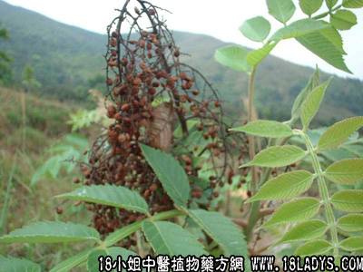

盐霜柏(中药材植物名:滨盐肤木)(植物科目:漆树科)

别名：盐炭根。
植物名：滨盐肤木。
生长环境：本品为灌木或小乔木。生于山地的疏林中，或开旷山坡、稍湿润土壤。
分布：我国广东和台湾。
入药部分：根。
采集期：全年。
自采地点：山岗。
性味：性微凉、味咸。
功能：凉血、降火。
主治、用量和用法：1、咳嗽咯血：干根1至两至2两，清水煎服；2、劳伤，配伍用；3、癍痧发热：干根1至2两，清水煎服，或配伍用。
验方1：（治劳伤咳嗽方)盐霜柏1两、五爪龙1两、红菱根5钱，清水四碗，煎成一碗服。
（方解）盐霜柏味咸性凉，咸凉降火，最宜用于阴虚阳亢，劳伤咳嗽病者有虚火乘金之象，用此药甚当。本方配五爪龙化气止咳；红菱根、红李根清热凉血。组成退劳热、止咳嗽之方。
（方歌）劳伤咳嗽盐霜柏，红菱红李两根挖，汤下还潜五爪龙，降火潜阳宁肺魄。
验方2：（治癍痧大热方）蛇泡簕5钱、山芝麻5钱、海金沙5钱、干乌扣叶5钱、盐霜柏1两，清水四碗煎成一碗服。
（方解）本方蛇泡簕，乌扣叶清热；海金沙清热利水；山芝麻清热滑大肠；重用盐霜柏以凉血。凡癍痧发热、血热重者，更为适合。
（方歌）癍痧大热毒邪加，盐霜柏入海金沙，蛇泡芝麻乌扣叶，解毒清肠透络痧。
参考资料：《广东省中医验方交流汇编》驳骨方：生盐霜柏树根皮数两，擂烂和黄毛生鸡仔一只，卷烂如泥，敷患处，外加夹板固定。